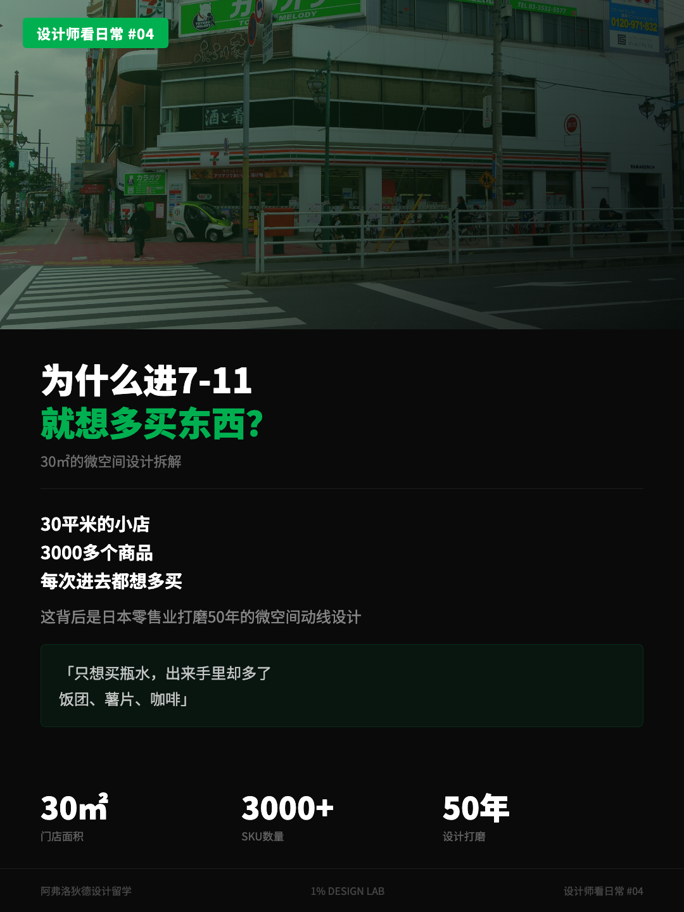
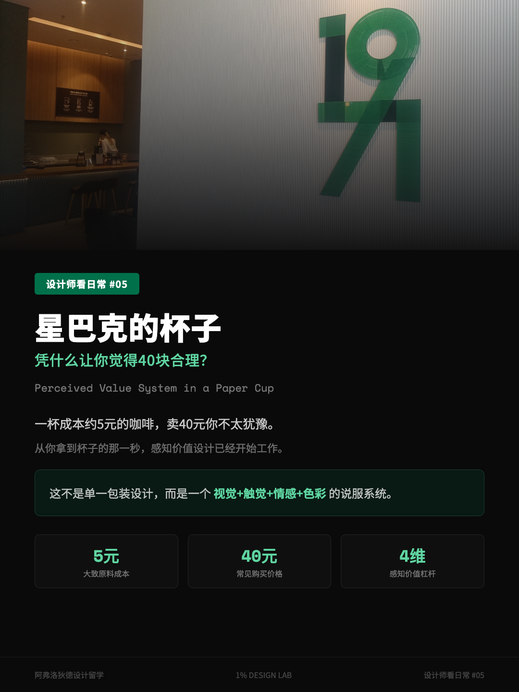

Independent notes by Joey Zhao
Notes on AI agents,
product design, and shipping.
I don’t write “design matters.” I take apart a shipped interface, a fast-food chair, a failed AI generation — and show what I saw, what I traded off, and which conclusions still can’t be drawn.
 AI-generated concept art
AI-generated concept artAI Agent UX Needs More Than Screens
Real AI agents time out, lose context, and fail. I use three shipped products to show how progress, evidence, recovery, and human control should work.
Read the essay →Latest writing

How a 30㎡ 7-Eleven Gets You to Buy Three Extra Things
North America is searching about store closures while Japan spends ¥300 billion remodeling. Counterclockwise flow, the golden triangle, 1.5-meter shelves, the checkout zone — viral numbers re-checked.
11 min read 02

How a Starbucks Cup Convinces You the Price Is Fine
Bearista cups sold out again. Tapered shape, haptic signals, handwritten names, the green permission slip — a perceived-value system you hold in your hand, fact-checked.
10 min read 03

No Clocks, No Windows: What Is a Casino’s Design Actually Computing?
Four retention tricks — the time vacuum, the ugly carpet, the near-miss, and chip demonetization — and which scary-sounding numbers I deleted this time around.
12 min read 04

Why Can’t You Leave IKEA?
One-way layout, showroom context, the peak-end rule — all real. But the “three times longer” and “40% higher value perception” claims? I re-checked them.
11 min read 05

Where Did the Apple Store’s Door Go?
Apple swapped the door for a glass wall and crushed threshold resistance to near zero. Taking apart its entrance, vitrine, and spatial gradient — and what to steal for digital products.
11 min read 06

What Is McDonald’s Seating Actually Optimizing For?
Using store photos from Hong Kong, Macau, Munich, and Budapest to test what the popular “hard chairs kick you out” story actually leaves out.
11 min read 07

One Brief, Fourteen Platforms
How I researched the workflow, moved beyond chat, designed honest AI failure, and took Finfold into a real public room.
12 min read 08

The Mirror in the Elevator Isn’t Mainly for Checking Your Face
Starting from an aging office tower in Shenzhen, I check four explanations one by one — waiting psychology, sense of space, rear-view safety, and reversing a wheelchair.
10 min read 09

A Product Designer Portfolio Is a Chain of Evidence
Signals, UnifyUX, and Finfold show what a strong UX case study needs to prove about problems, trade-offs, failure, and outcomes.
11 min read